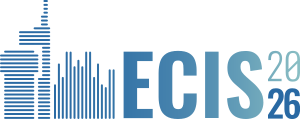

Lukas Schmidt
Visiting Researcher, Stanford HAI · M.Sc. with Honors, TUM
I am a Visiting Researcher at the Stanford Institute for Human-Centered Artificial Intelligence (HAI) and a graduate student in Finance and Information Management (FIM) at the Technical University of Munich. Before that, I studied Industrial Engineering and Management to pursue my interest in applied math and physics. I have also followed the startup ecosystem closely for many years — currently through the Manage and More scholarship at UnternehmerTUM. My research sits at the intersection of causal machine learning, human–AI collaboration, and high-stakes decision-making.
Research
I am interested in how people make decisions in the age of AI — especially in settings where every decision carries high risk or high impact.
Causal inference has a long history, but causal machine learning has only recently emerged as a field of its own. Most of its research focuses on algorithmic advances and leaves out the people who ultimately have to work with these systems. My research therefore started by identifying the requirements such systems need to meet in practice. We then translated these requirements into prototype systems that combine recent advances in causal machine learning with the newly gained design knowledge. Because every decision in medicine carries significant consequences, we chose clinical decision support as our starting point.
Currently, I am working on causal models for new or altered decision cases. We study how large language models interact with the underlying causal models, with the goal of developing new approaches to decision abstention — recognizing when a system should hold back rather than recommend.
Publications
-

-
What Does It Take to Detect an AI Agent? Minimal Feature Sets for Behavioral Detection under Browser Automation
News
- Start as Visiting Researcher at the Stanford Institute for Human‑Centered AI (HAI).
- Full paper presentation at ECIS 2026 in Milan.
- Abstract presentation at the North East AI Agents Day at Jane Street, NYC.
- Start as Visiting Researcher in Causal ML & Decision Support Systems at the Wharton School, UPenn.
- Start of Manage and More scholarship program at UnternehmerTUM.
- Start of M.Sc. in Finance and Information Management (FIM) at TUM.